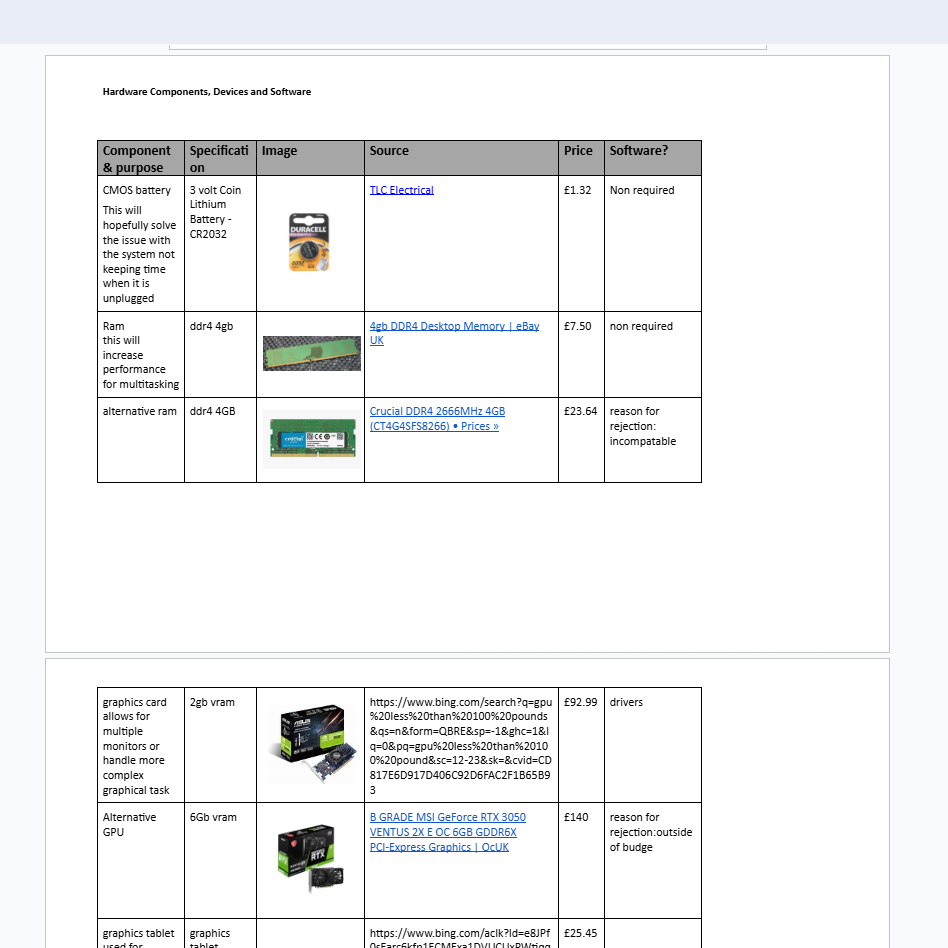
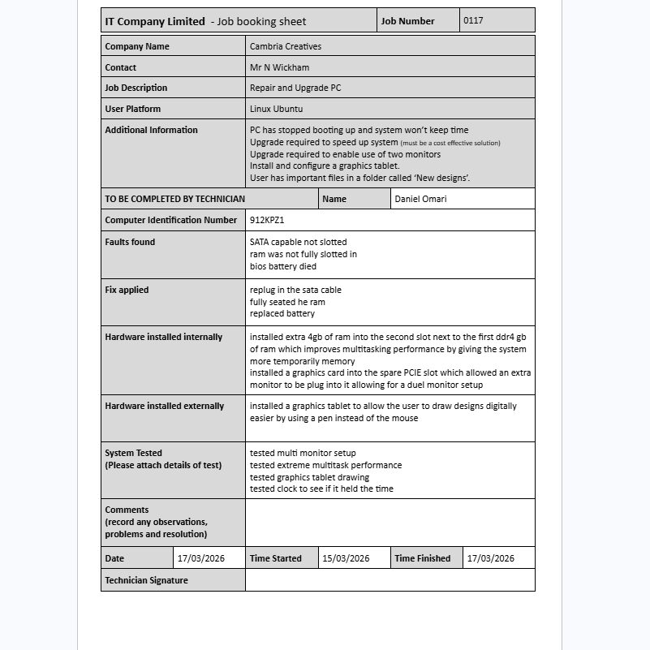
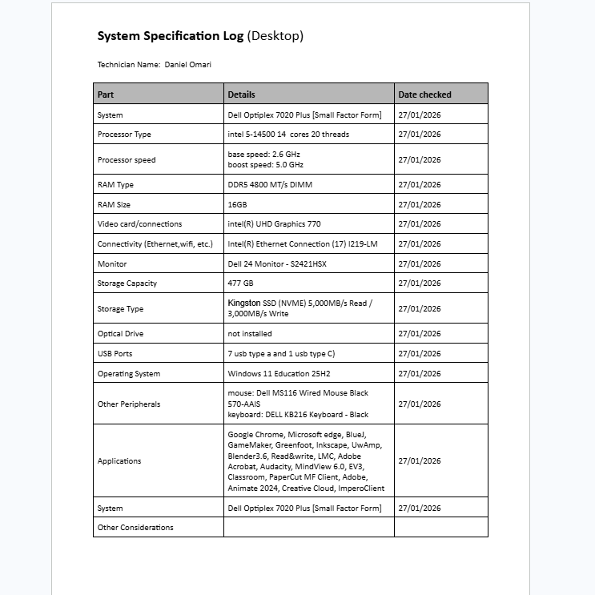

Home Page
unit 1
unit 2
unit 8
unit 13
unit 13 information
unit 14
unit 14 information

Technology systems can include a multitude of external hardware devices and internal hardware components. Over time it is necessary to maintain the system to repair faults (such as a loose component) and improve performance or upgrade the system’s functionality (for instance by installing a faster processor). Job roles that demonstrate installing and maintaining computer hardware include computer technician, technical support engineer, service team leader, and helpdesk engineer.

